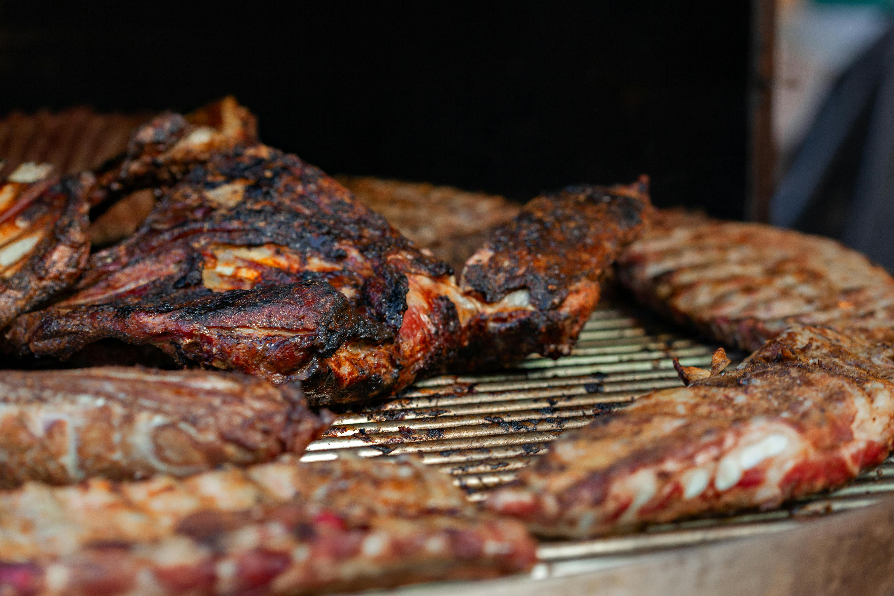
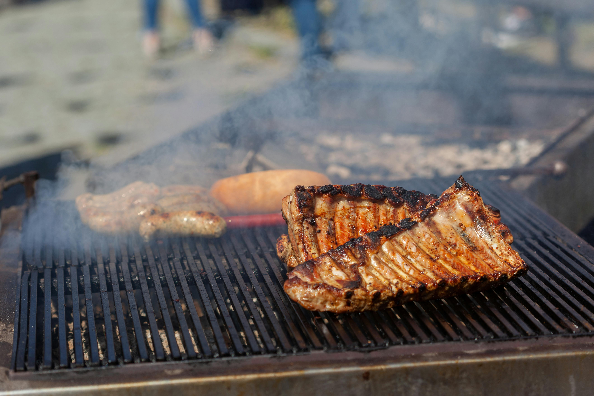
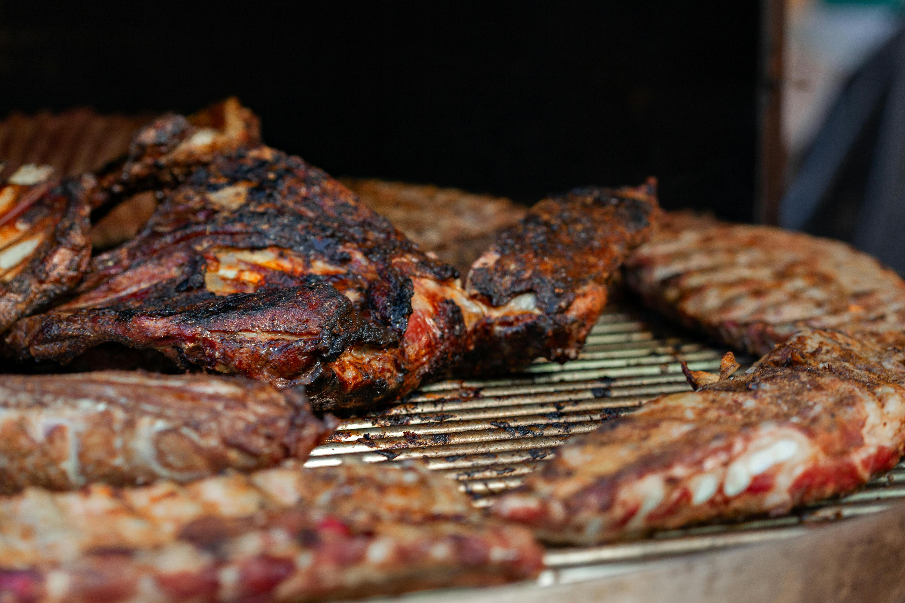
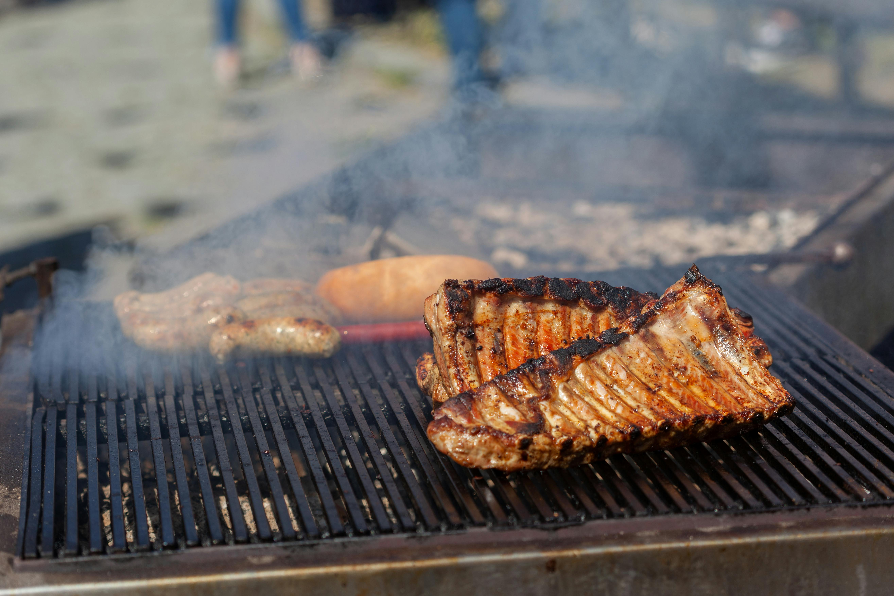

Möra revbensspjäll glaserade med husets BBQ-sås – söt, rökig och med ett lätt sting av chili.
Våra BBQ-ribs är långlagade för maximal smak och mörhet – köttet glider av benet med minsta lilla tryck. Revbensspjällen marineras över natten i en kryddig rub och tillagas sedan "low & slow" för att uppnå den där klassiska, rökiga karaktären. När de är som mörast penslas de generöst med en husets BBQ-sås, sötad med honung och balanserad med ett sting av chili och vitlök. Resultatet är en saftig, karamelliserad yta och ett djup av smaker som stannar kvar länge. Serveras med kärlek, kladd och gärna ett par servetter extra.